Dreaming
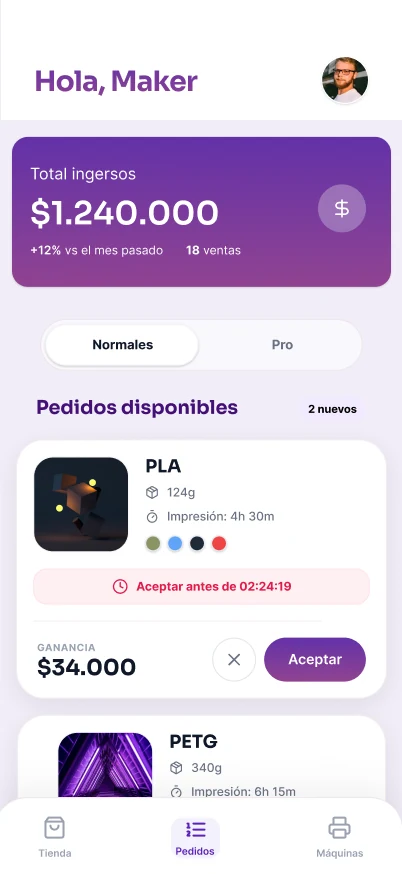
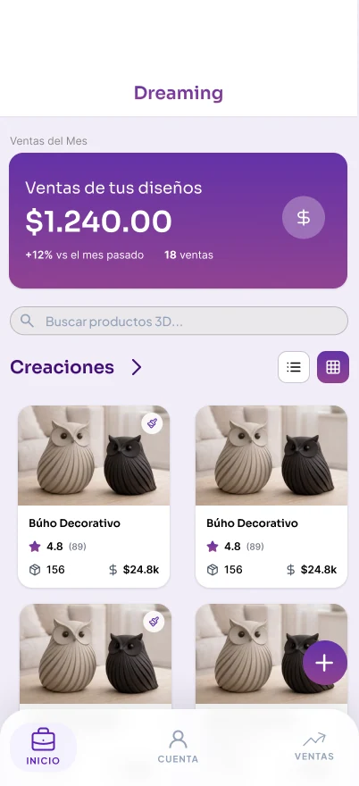
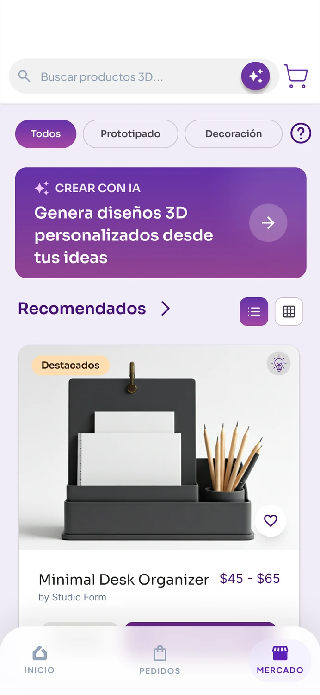
Tipo de proyecto
Proyecto personal
Con una fase académica en equipo
Equipo
Equipo de 3 personas
Yo incluido, con un equipo de clase en investigación y pantallas secundarias
Rol
UX-UI + Desarrollo
Dirección de producto, research y front-end
Duración
3 meses
2026
Resumen
Dreaming es una plataforma bilateral que conecta consumidores, diseñadores 3D y makers para convertir archivos digitales en objetos físicos. Más que una app, funciona como un estructurador de mercado que busca formalizar la impresión 3D.
Estrategia de producto
Definir el modelo de tres actores y el punto que los conecta.
Research y diseño
Entrevistas, mapeo de actores y la interfaz de cada rol.
Prototipo y desarrollo
Del wireframe al MVP: arquitectura de datos, cotizador y flujos en alta fidelidad.
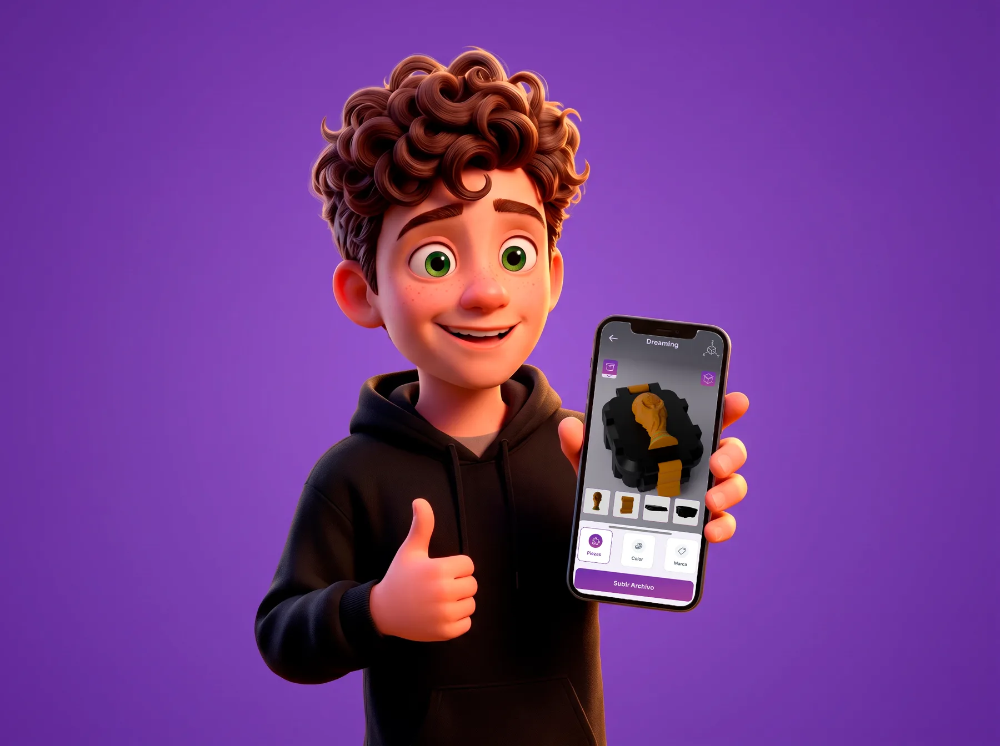
Problema
Dreaming nació para resolver los dolores de un mercado masivo pero fragmentado e informal: los consumidores enfrentan precios opacos y desconfianza, y los makers gestionan pedidos de forma caótica por redes sociales, asumiendo riesgos operativos al imprimir archivos problemáticos sin trazabilidad ni garantías de pago.
01
Precio opaco
El consumidor no sabe cuánto debería costar su pieza ni por qué.
02
Operación informal
El maker coordina por chat, sin cola de pedidos ni respaldo.
03
Catálogo disperso
El diseñador no tiene dónde vender lo que ya modeló.
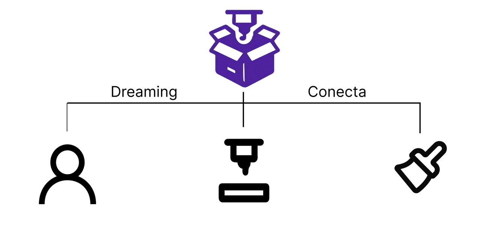
Dreaming se ubica en el punto que hoy no existe: el que conecta a los tres.
Método
El proyecto se desarrolló bajo la metodología del doble diamante. Para diseño y desarrollo de producto, tener la iteración como base es lo que evita enamorarse de la primera solución.
Descubrir
Cuestionarios y entrevistas.
Definir
Mapa de actores y problema.
Desarrollar
Ideación y diseño de la app.
Entregar
Pruebas, iteraciones y MVP.
Actores
Uno genera el pedido, otro lo produce y el tercero alimenta el catálogo que lo hace posible. Si falta un actor, el ciclo se rompe.
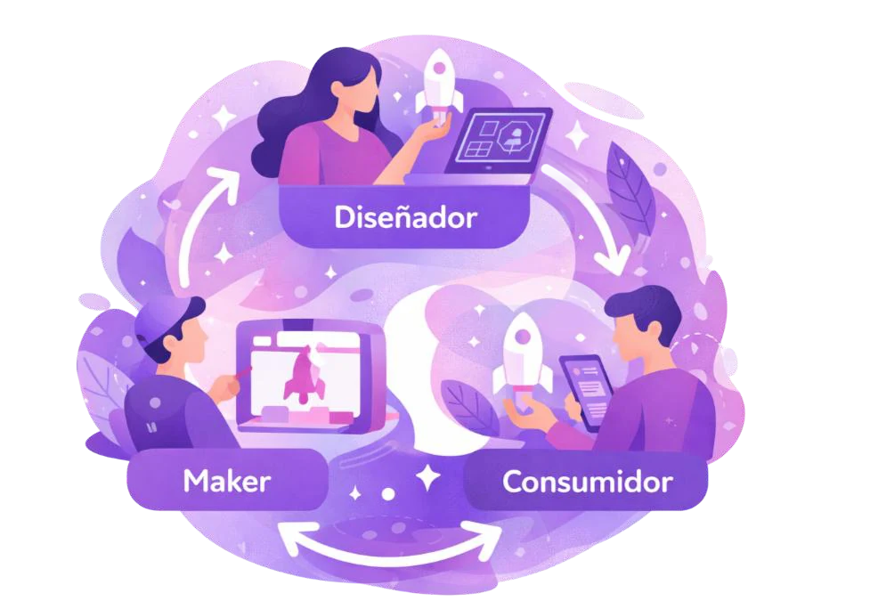
Consumidor
Genera el pedido, por el marketplace o por medio propio.
Maker
Recibe el pedido, lo imprime y lo entrega.
Diseñador
Nutre el catálogo con sus ideas y productos.
Investigación
La investigación combinó cuestionarios, entrevistas a profundidad y pruebas con prototipos para entender el modelo mental de cada actor. El objetivo no era preguntar qué querían, sino descubrir qué los frena.
31 cuestionarios
Respuestas con sesgo joven: 20 participantes entre 18 y 24 años, con hábitos de descubrimiento digital.
19 entrevistas
5 consumidores para mapear prioridades y 14 makers, de los cuales 12 llevan menos de 3 años imprimiendo.
Think aloud y Maze
Sesiones uno a uno narrando el proceso mental, más tareas medidas en prototipos de baja y media fidelidad.
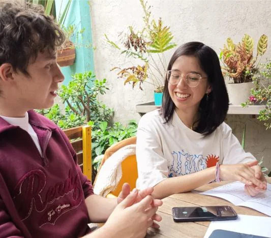
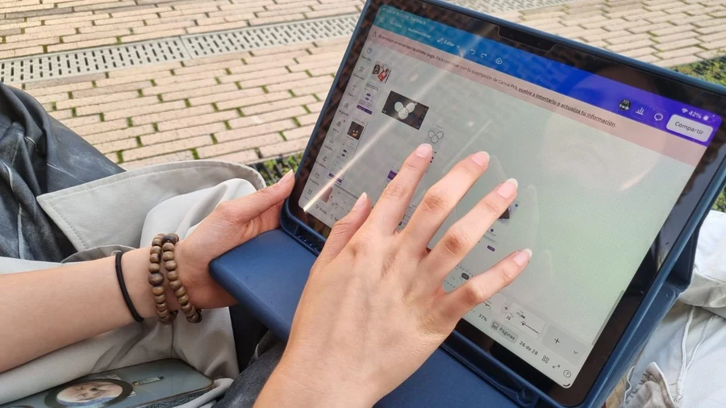
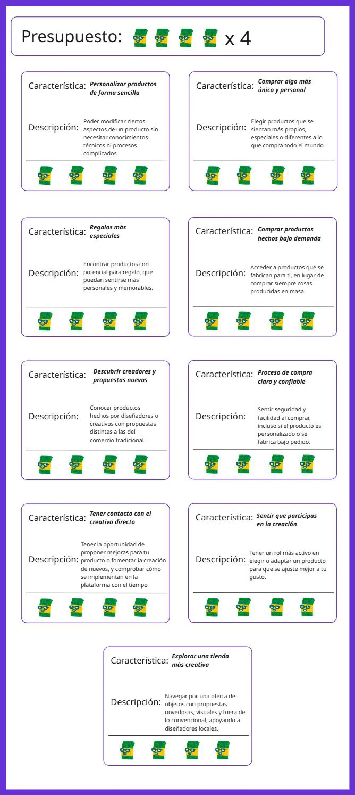
Cada perfil llega con un miedo distinto. Estos son los cuatro hallazgos que definieron qué diseñar primero.
01
Consumidor · la duda de calidad frena la compra
15 de 31 encuestados señalaron el miedo a que la pieza no salga bien como su principal freno, por encima del precio.
02
Consumidor · control, pero sin esfuerzo
19 de 31 prefieren opciones predefinidas antes que diseñar desde cero: la compra clara puntuó 2,6 frente a 1,6 de la participación creativa.
03
Diseñador · circulación antes que dinero
Su motivación no es vender rápido, sino que sus modelos salgan del portafolio. Su miedo: que la plataforma desfigure la pieza original.
04
Maker · el desgaste de la informalidad
Negociar precio y tiempo con cada cliente los agota, y captan trabajo casi solo por recomendación de boca a boca.
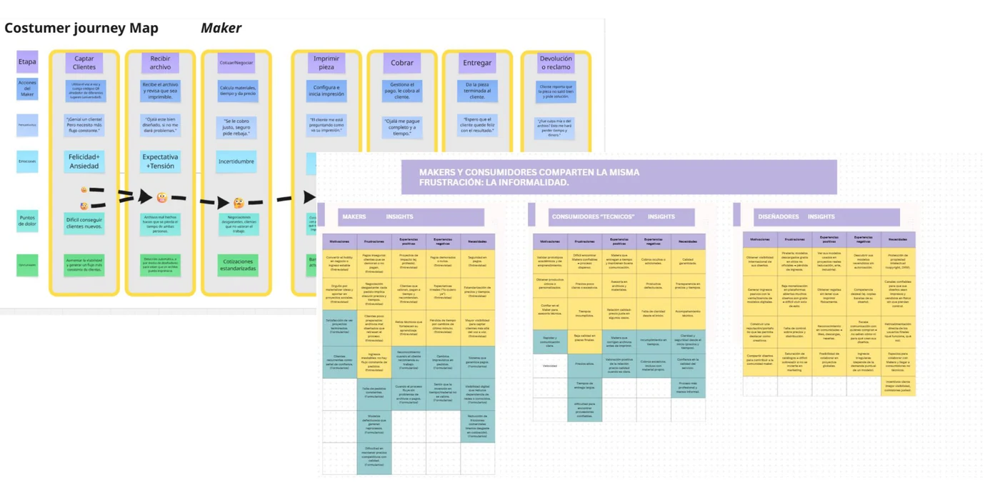
Customer journey map por actor: dónde aparece la fricción en cada recorrido.
Ideación
Se definió la arquitectura de la información: qué flujos existirían y cómo navegaría cada rol. Sobre esa base se dibujaron wireframes rápidos y los diagramas de flujo de la app.
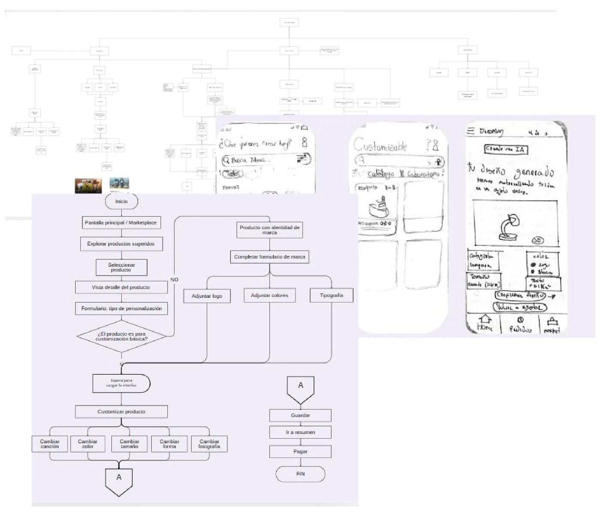
Arquitectura de información, diagramas de flujo y primeros wireframes a mano.
Diseño
Cada actor entra a la misma plataforma con una necesidad diferente. La lógica visual es única; lo que cambia es qué se pone primero en pantalla.
01
Prioridad a la acción
Lo que el usuario vino a hacer va arriba, sin scroll.
02
Precio siempre visible
Ningún flujo avanza sin mostrar cuánto cuesta.
03
Un solo sistema
Mismos componentes para los tres roles, distinto orden.
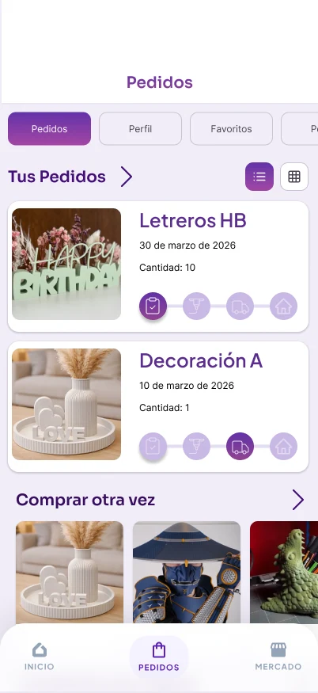
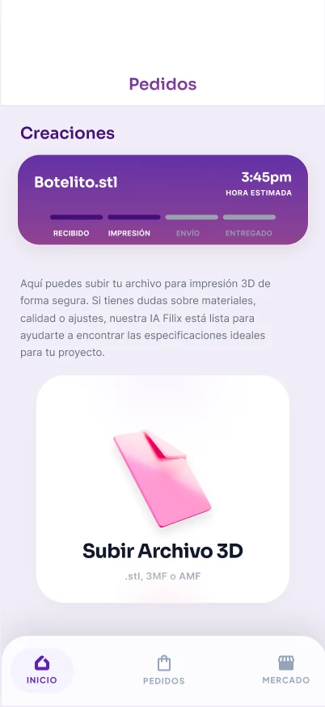
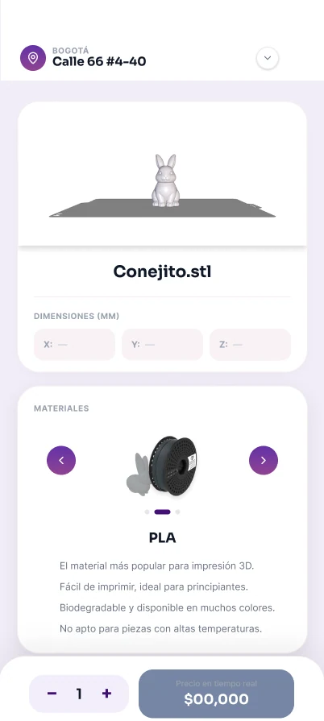
Consumidor
La respuesta al freno de la calidad y al precio opaco: una cotización desglosada en tiempo real, donde el usuario ve material, envío y honorarios antes de pagar, con el peso calculado por tamaño y relleno y evidencia fotográfica real de cada maker.
Diseñador
Un panel donde suben y organizan sus modelos, y deciden si un archivo es editable o cerrado. Sumé un dashboard con métricas de conversión y ventas que avisa cuando una versión nueva rinde peor, y bloqueo de descargas para proteger su obra.
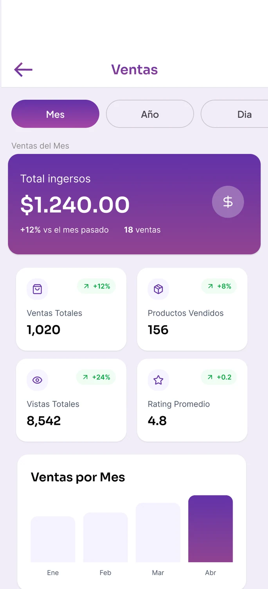
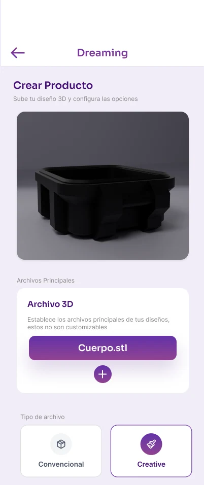
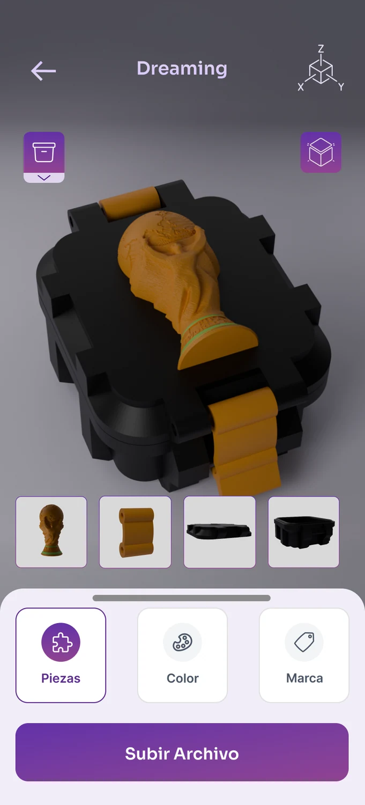
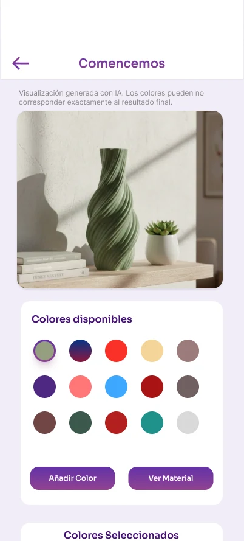
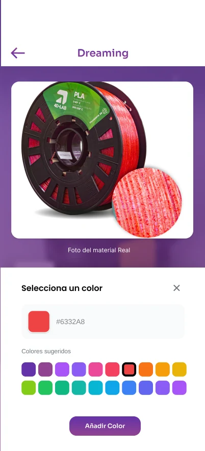
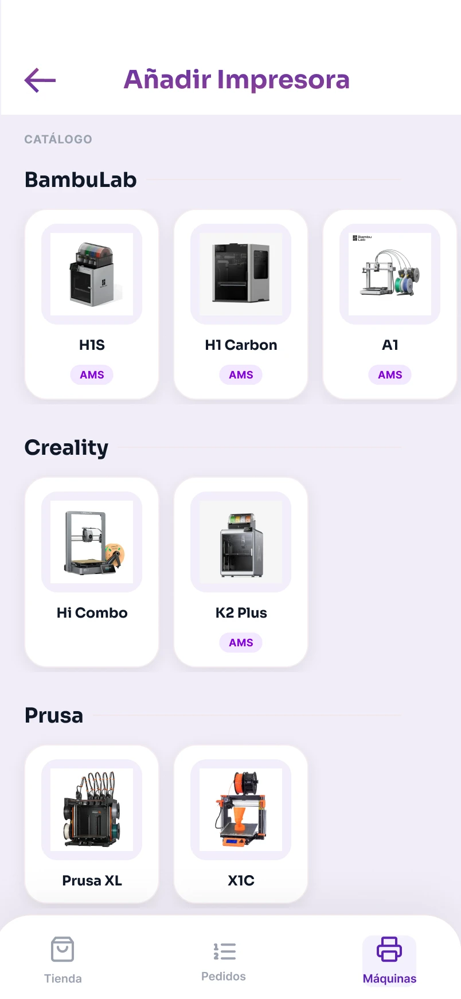
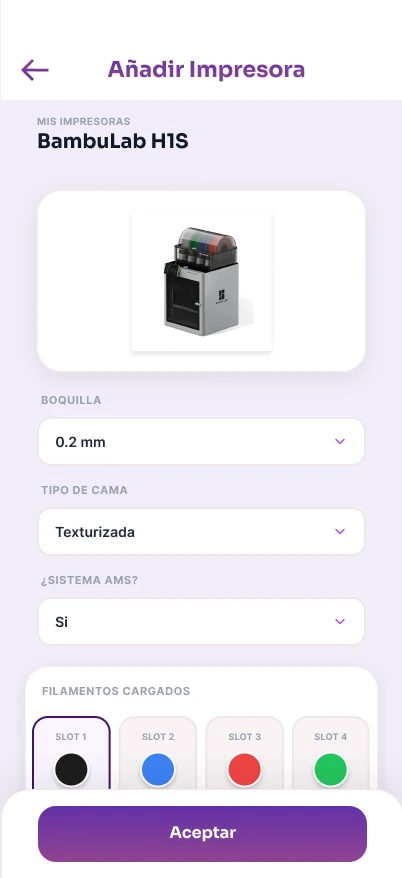
Maker
Un feed de pedidos en vivo donde solo aparecen trabajos listos: la IA ya revisó que el archivo no esté roto. Cada tarjeta muestra ganancia neta, material, tiempo y máquina sugerida, con estados operativos que garantizan el pago.
Pruebas
Con el prototipo en mano hicimos pruebas moderadas y no moderadas en Maze con 8 diseñadores y 12 consumidores: subir un proyecto, personalizar una pieza y completar un flujo de compra. Medíamos tasa de éxito, tiempo en pantalla, clics erróneos y claridad percibida.
Hallazgo 01
86,1%
Clics erróneos al elegir color
En el panel de personalización llegaron al 86,1%: la gente tocaba la pantalla completa. Agregamos una guía y rediseñamos la jerarquía.
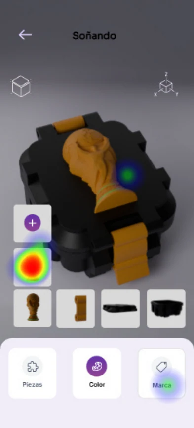
Hallazgo 02
25%
Abandono al subir archivos
El 25% de los diseñadores abandonó al intentar agregar variaciones. Redujimos el ruido visual y simplificamos los pasos para subir STL.
Hallazgo 03
Foto real
La calidad seguía sin probarse
El think aloud confirmó la duda del cuestionario: nadie sabía si la pieza saldría bien. De ahí salió la foto real obligatoria del maker.
Lo que sí funcionó
Seguimiento de pedidos: la tarea con mejor tasa de éxito de la ronda.
Iteraciones
Un ejemplo concreto. En la pantalla donde el diseñador define las opciones personalizables de su modelo, el botón para subir el archivo quedaba debajo del scroll: la gente no encontraba cómo avanzar y se quedaba ahí. Repensamos la interfaz para que muestre lo esencial en una sola vista — el visor, las piezas y la acción de subir — sin necesidad de scroll.
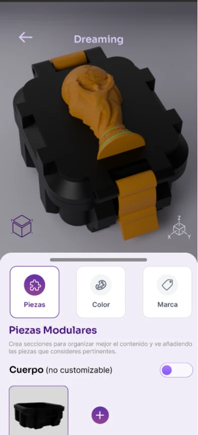
Desarrollo
Estructuré la arquitectura de datos relacional y los flujos en Figma. Hoy el MVP tiene el cotizador, los roles definidos y la lógica de base de datos lista. Sigue programar el frontend móvil, afinar el modelo de lenguaje para validación de piezas y conectar la pasarela de pagos.
Resultados
El proyecto pasó de una idea suelta a un modelo validado con gente real: 31 cuestionarios, 19 entrevistas y dos rondas de prueba sobre prototipo. Hoy el MVP tiene el cotizador, los roles y la lógica de datos resueltos; lo que viene es medir conversión en carrito, tiempo de aceptación del maker y retención del diseñador.
31
Respuestas de cuestionario que definieron las prioridades del producto.
19
Entrevistas a profundidad entre consumidores y makers.
86,1%
Clics erróneos detectados en personalización y corregidos al iterar.
Reflexión
Mi mayor estrellón fue asumir que la gente quería crear. Pensé que un lienzo en blanco enamoraría al usuario convencional, pero la fricción mata la inspiración: querían personalizar con barandas: elegir entre opciones, no modelar de cero. Si volviera a empezar habría validado antes con prototipos de baja fidelidad en papel, en vez de saltar rápido a alta fidelidad. Diseñar para tres perfiles fue brutalmente complejo porque un cambio en el checkout del cliente impacta el pago del diseñador y la cola del maker. Aprendí que en un marketplace la confianza y la claridad valen mucho más que una interfaz bonita.